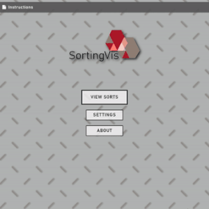
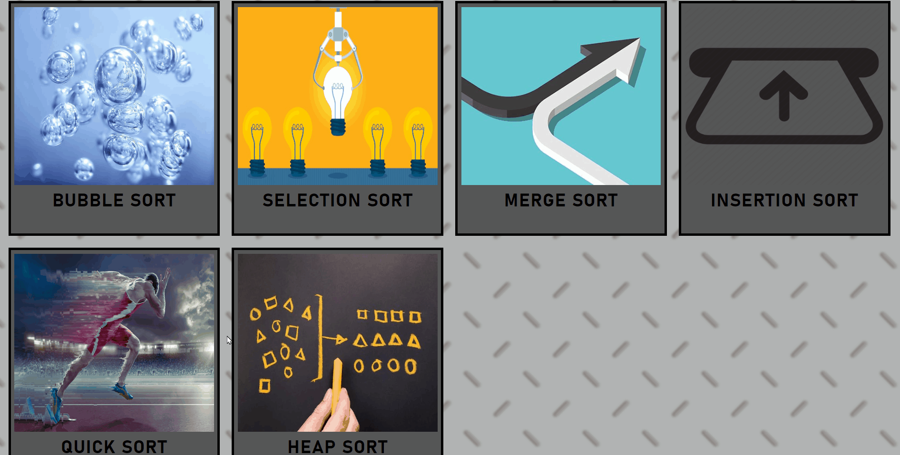
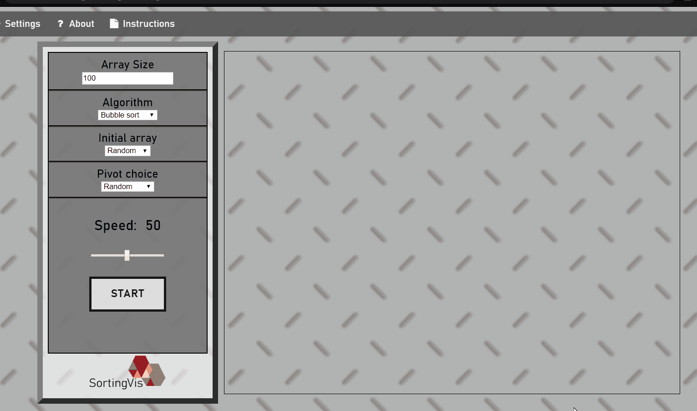
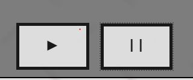
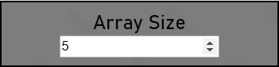
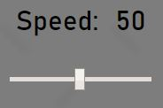

1) Select the view sorts on the home page to view all the sorting algorithms
2) Choose a sorting algorithm you want to see in action
Press START to initiate visualization
Use the "play" and "pause" button at any time to play or pause the algorithm
To edit the number of elements to sort change the array size
To select a different algorithm use the dropdown list to easily choose a different algorithm
To adjust the speed range to slow down or speed up the algorithm
If you desire to change any parameters after you have begun the sort,
you must refresh the page with the button at the top of the menu.
Or, you could press the restart button once the sort has finished.